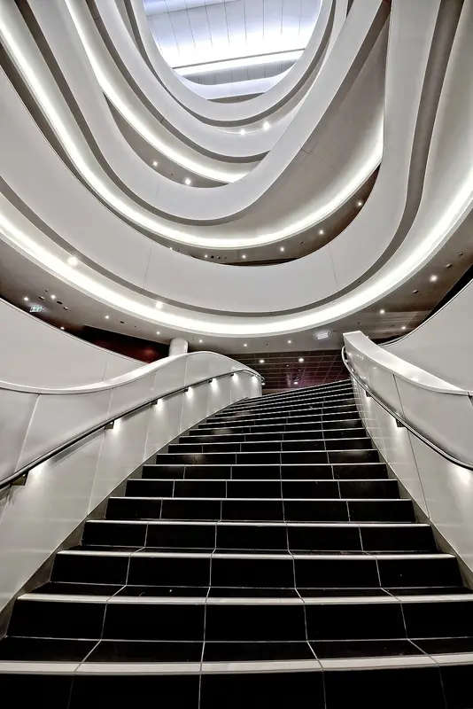

Sidere Mens Eadem Mutato
University of Sydney
Edmund Blacket's sandstone Main Quadrangle was begun in 1854, and Anthony Trollope called its Great Hall 'the finest chamber in the colonies'. The quadrangle was only finished in 1966, with the West Tower.
- 4Buildings
- 4Traditions
- 1859Oldest · Great Hall of the University of Sydney
- 2020Newest · Chau Chak Wing Museum
Campus map and Look Around
Tap a numbered pin to see that building from the street with Apple Look Around.
Planning the visit
- Fly intoSydney Airport (SYD)
Sydney Kingsford Smith Airport is about 10 km south of the Camperdown campus. Trains from the airport reach Redfern Station, a short walk from the university.
- Getting aroundWalking / Train to Redfern / Bus
Redfern Station is a short walk from the campus, and buses run along Parramatta Road and City Road from the city centre.
- Colors and teams
The Latin motto, Sidere mens eadem mutato, is translated by the university as 'the stars change, the mind remains the same'. Alumnus Clive James joked that it implies Sydney is really Oxford or Cambridge displaced 12,000 miles.
- Where to stayFind hotels near University of Sydney on Expedia Compare on Booking.com Vacation rentals on Vrbo
Stamped! may earn a commission when you book through these links.
4 buildings to stamp
-
Photo: No machine-readable author provided. KittySaturn~commonswiki assumed (based on copyright claims)., Public domain, via Wikimedia Commons University of Sydney Quadrangle
Parramatta Road, Camperdown NSW
A Sydney sandstone quadrangle in Victorian Academic Gothic Revival, begun by Edmund Blacket in the 1850s and completed with the West Tower in 1966. It is the heritage-listed heart of the Camperdown campus.
- Built
- 1966
- Architect
- Edmund Blacket, James Barnet, Walter Liberty Vernon and Leslie Wilkinson
- Style
- Victorian Academic Gothic Revival
- Today
- University Main Building
-
Photo: Mohd Hafiz Noor Shams, user earth (Talk), CC BY-SA 3.0, via Wikimedia Commons Great Hall of the University of Sydney
Main Quadrangle, Camperdown NSW
Completed in 1859 by Edmund Blacket, this Gothic Revival hall of stained glass, gables and gargoyles hosts graduations and recitals. Anthony Trollope thought no Oxford or Cambridge college had a hall with proportions so good.
- Built
- 1859
- Architect
- Edmund Blacket
- Style
- Victorian Academic Gothic Revival
- Today
- Ceremonial Hall
-
Photo: Nick-D, CC BY-SA 4.0, via Wikimedia Commons Chau Chak Wing Museum
University Place, Camperdown NSW
Johnson Pilton Walker's five-storey museum, completed in 2020, has four levels of exhibition space, including the Macleay and Nicholson galleries. A replica of an Aboriginal petroglyph of two wallabies greets visitors in the forecourt.
- Built
- 2020
- Architect
- Johnson Pilton Walker
- Style
- Contemporary
- Stories
- 5
- Today
- Museum
-

Photo: Jason Tong, CC BY 4.0, via Wikimedia Commons Charles Perkins Centre
Royal Prince Alfred Hospital precinct, Camperdown NSW
Francis-Jones Morehen Thorp's research hub, opened in 2014, is built around a full-height atrium with a sweeping spiral staircase. It is named for Charles Perkins, the first man of Aboriginal descent to graduate from an Australian university.
- Built
- 2014
- Architect
- Francis-Jones Morehen Thorp with Building Studio
- Style
- Modernist
- Stories
- 6
- Today
- Medical Research Centre


4 traditions to check off
Stamped! keeps these as a checklist, so you can tick each one off on the visit.
The Quadrangle jacaranda
Campus folklore says any student who has not started studying before the Quadrangle's jacaranda flowers will fail their exams. Visitors can see the tree (a clone of the 1928 original) bloom purple in late spring, a favourite photo backdrop.
War Memorial Carillon recitals
The clock tower holds the War Memorial Carillon, dedicated in 1928 and one of only three carillons in Australia. Visitors can hear live recitals at lunchtime (outside exam periods and public holidays).
Spot the kangaroo gargoyle
Among the Quadrangle's many gargoyles are Australian animals, including a kangaroo on the clock tower and kookaburras above the northern foyer entrance. Visitors can look for them around the sandstone buildings.
Graffiti Tunnel
The Graffiti Tunnel began as a student protest against the Vietnam War and is now a constantly changing living artwork. Visitors can walk through and see the latest layers of student art.
History
Founded 1850
From Wikipedia
One of Australia's six sandstone universities, it was one of the world's first universities to admit students solely on academic merit, and opened its doors to women on the same basis as men. The university comprises eight academic faculties and university schools, through which it offers bachelor, master and doctoral degrees.
The app's quiz · 10 questions
How well do you know University of Sydney?
The same quiz as in Stamped!: name the landmark, its architect, its style or the year it was finished. Every round is different.
Know University of Sydney well?
Students and alumni know the traditions best. Suggest one we're missing, a building worth a stamp, a fix, or your own photo of a building. Every suggestion is checked before it goes into the app.
More schools around the world
- Aalto University
- Durham University
- King's College London
- KU Leuven
- McGill University
- National Autonomous University of Mexico
- Trinity College Dublin
- University College London
- University of British Columbia
- University of Cambridge
- University of Coimbra
- University of Edinburgh
- University of Glasgow
- University of Melbourne
- University of Oxford
- University of Padua
- University of Paris (Sorbonne)
- University of Salamanca
- University of St Andrews
- University of Tokyo
- University of Toronto
- Uppsala University
Stamp all 4 on your visit.
Tour University of Sydney in 3D before you go, add it to a college road trip and earn a passport stamp at every building. Free on iPhone, iPad and Mac.
Download on theApp StoreEnjoying the guides? Leave a tip to help keep new cities coming.